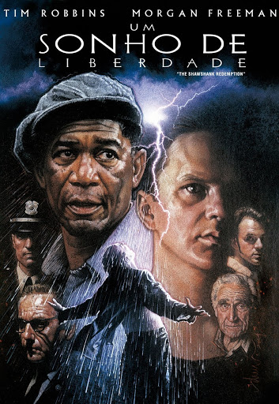

Um Sonho de liberdade
Andy Dufresne é condenado a duas prisões perpétuas consecutivas pelas mortes de sua esposa e de seu amante. Porém, só Andy sabe que ele não cometeu os crimes. No presídio, durante dezenove anos, ele faz amizade com Red, sofre as brutalidades da vida na cadeia, se adapta, ajuda os carcereiros, etc.
- Gênero: Drama
- Ano: 1995